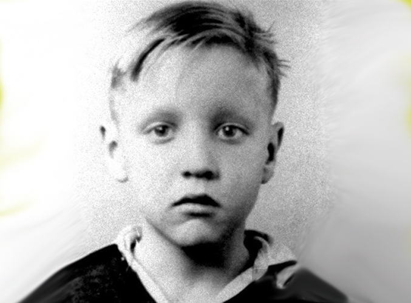
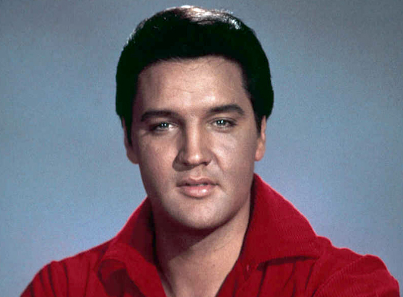
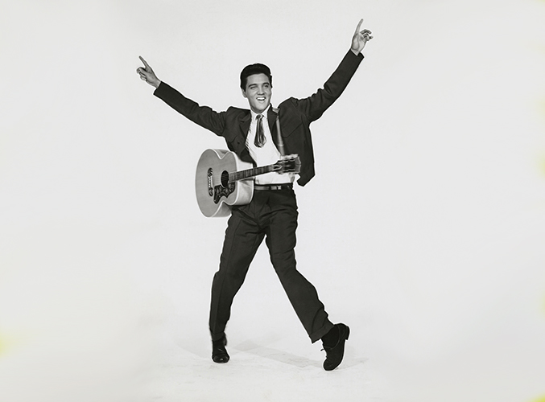

Elvis Presley jQuery Slide Show
  
Elvis Presley jQuery Tabbed Menu Bar
The early years
The middle years
The ending years
Elvis enjoyed his childhood and had many friends.
Elvis was known as a cross-over singer.
Elvis went on to become the highest paid solo signer.
Elvis Presley JQuery Accordion
FACT 1
Elvis is remembered more than any other American singer.
FACT 2
He once flew from Memphis to Las Vegas just to get a coffer with friends.
FACT 3
He as introduced on the Ed Sullivan show.